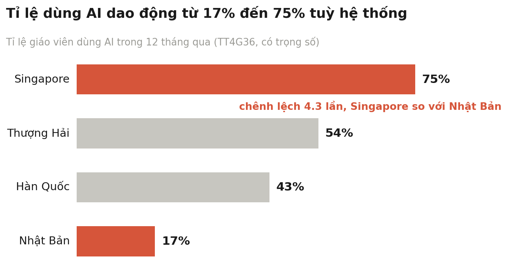
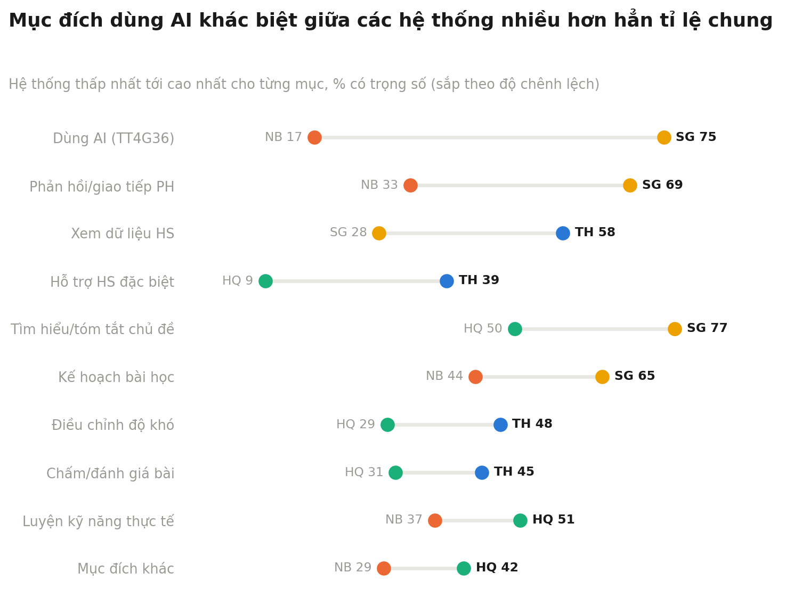
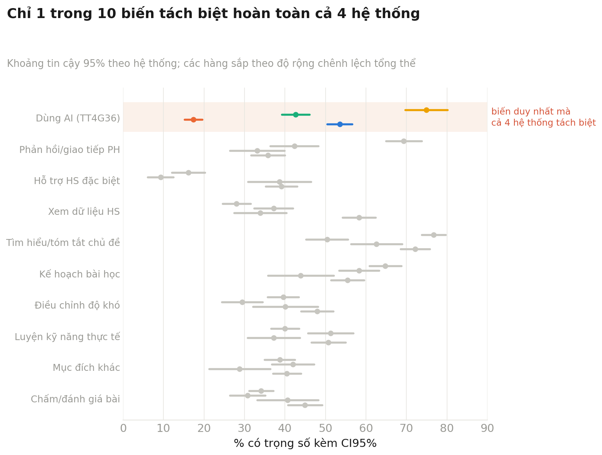
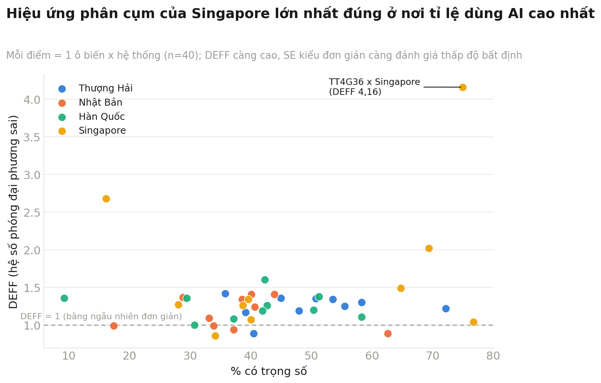
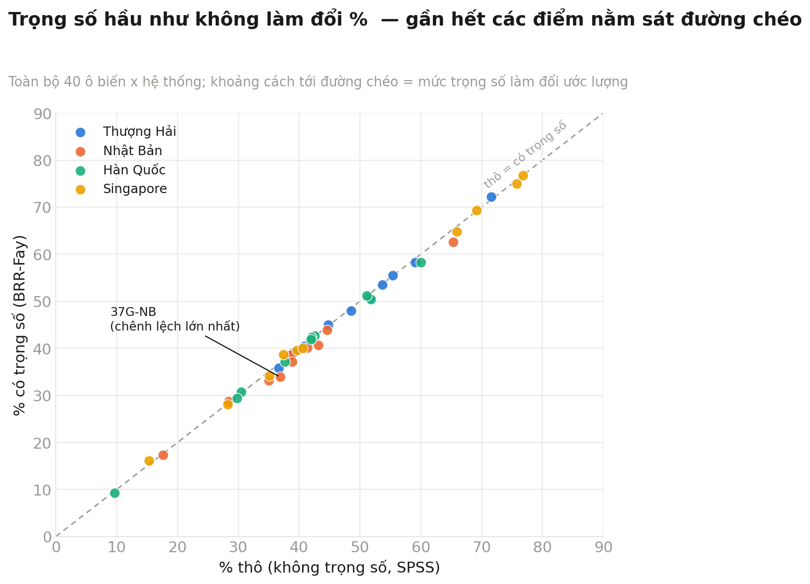
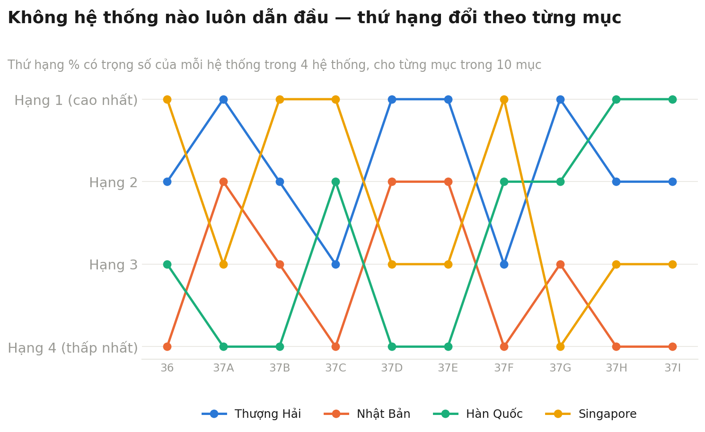
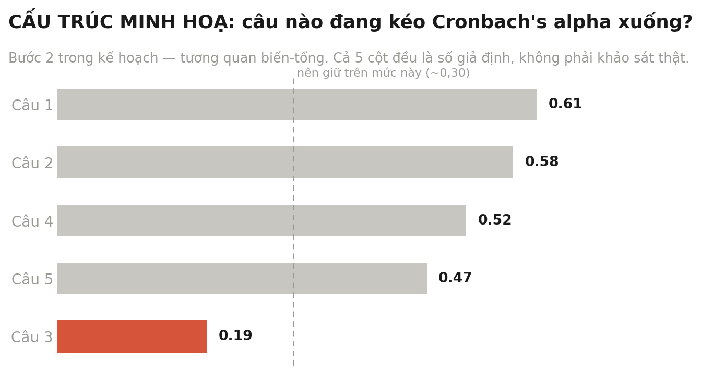
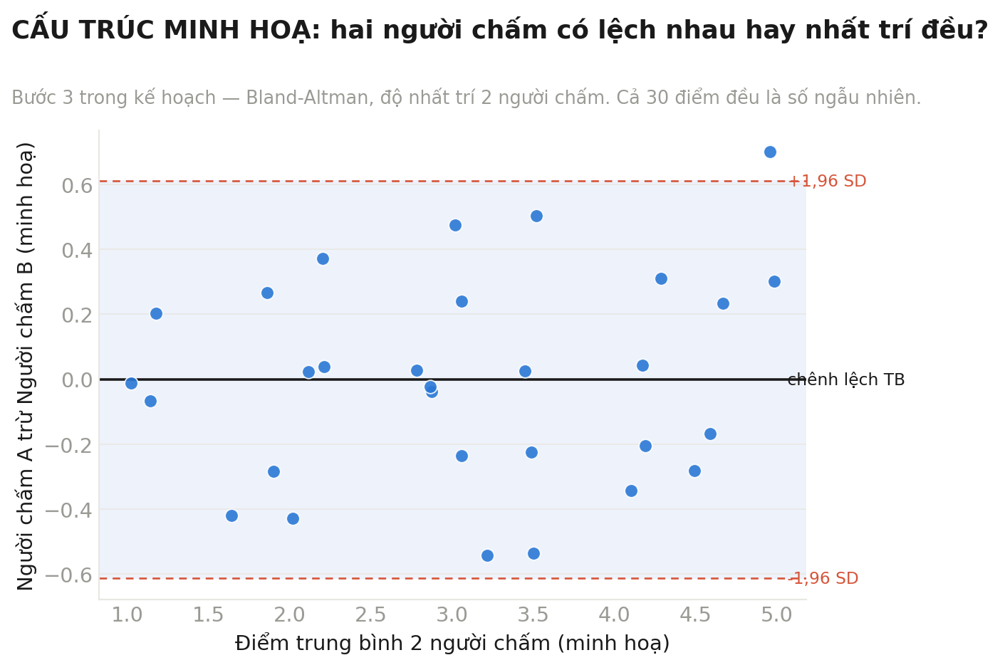
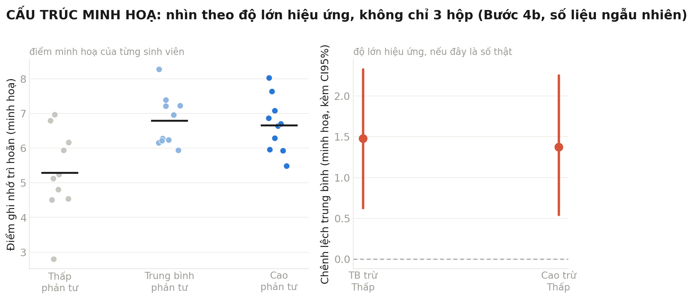

1. Bài nhóm TALIS — 6 biểu đồ, số liệu thật từ Câu hỏi 2
Bộ biểu đồ này thay cho bản cũ (cột đơn giản, một bảng cột 40 dòng cho DEFF, một bảng cột 40 dòng cho chênh lệch thô/trọng số) — các bản cũ không sai nhưng khá phẳng, khó "nhìn phát hiểu ngay". Bản mới áp dụng 4 quy tắc xuyên suốt: tiêu đề là một câu khẳng định nêu thẳng phát hiện (không phải nhãn chung chung); bảng màu xám-cho-bối-cảnh/một-màu-cho-trọng-tâm thay vì 4 màu cạnh tranh nhau khắp nơi; ghi chú trực tiếp lên đúng điểm dữ liệu thay vì chỉ dựa vào chú giải; và quan trọng nhất — ít biểu đồ hơn nhưng mỗi cái trả lời một câu hỏi khác nhau, không cái nào lặp việc của cái khác. Toàn bộ số liệu lấy từ weighted_results_q2.csv (kết quả BRR-Fay đã kiểm chứng ở Module VKL 5-11), và được chạy lại lần nữa trong notebook Jupyter đính kèm (mục Tải về) để chắc chắn không có sai lệch.

Đọc hình: Singapore (75%) và Nhật Bản (17%) là hai đầu của khoảng cách 4,3 lần trên câu hỏi đơn giản nhất trong cả bộ — số chênh lệch được ghi thẳng lên hình, không bắt người đọc tự tính. Hợp để mở đầu hoặc kết luận một slide chỉ cần nêu đúng một ý.

Đọc hình: "Dùng AI" có khoảng cách rộng nhất, nhưng vài mục cụ thể cũng gần bằng — ví dụ "Phản hồi/giao tiếp phụ huynh" (Nhật Bản 33 tới Singapore 69). Các mục hẹp nhất lại có Hàn Quốc hoặc Nhật Bản ở cả hai đầu, không phải Singapore — một kiểu mẫu mà biểu đồ cột màu theo nước hay heatmap không thể hiện trực tiếp được.

Đọc hình: biến có độ chênh lệch rộng nhất ở Biểu đồ 2 (TT4G36) được xác nhận ở đây là biến DUY NHẤT có 4 khoảng tin cậy 95% không chạm nhau — tô nền và ghi chú ngay tại chỗ thay vì bắt người đọc dò 40 cặp CI bằng mắt. Mọi biến khác, kể cả biến có khoảng cách nhìn lớn, đều có ít nhất một cặp chồng lấn, nên không an toàn để khẳng định khác biệt từng cặp ở đó.

Đọc hình: phần lớn các điểm nằm trong khoảng DEFF 1,0-1,5 bất kể hệ thống nào. Ba điểm của Singapore tách hẳn khỏi cụm đó (DEFF 1,5; 2,0; và 4,16 — điểm cao nhất được gắn nhãn) — mẫu giáo viên Singapore phân theo cụm trường học rõ hơn ba hệ thống còn lại, và rõ nhất đúng ở biến có tỉ lệ cao nhất (TT4G36). Một biểu đồ phân tán duy nhất này thay thế hẳn bảng cột 40 dòng trước đây.

Đọc hình: gần như mọi điểm đều nằm sát đường chéo. Tính cụ thể: chênh lệch lớn nhất là 3,01 điểm (TT4G37G, Nhật Bản — gắn nhãn trên hình), chênh lệch tuyệt đối trung bình trên cả 40 ô chỉ 0,75 điểm. Ghép với Biểu đồ 4, câu chuyện rất rõ ràng: trọng số ảnh hưởng tới độ chắc chắn nhiều hơn hẳn so với ảnh hưởng tới điểm phần trăm.

Đọc hình: cả 4 đường đều có lúc chạm hạng 1 và có lúc chạm hạng 4 — không hệ thống nào đơn giản là "luôn dẫn đầu" về dùng AI; thứ hạng phụ thuộc vào đúng mục đích cụ thể đang hỏi. Biểu đồ khám phá thêm, phù hợp cho phần thảo luận.
Khuyến nghị: dùng Biểu đồ 1 hoặc 2 làm slide mở đầu/toàn cảnh, Biểu đồ 3 làm biểu đồ chính cho phần Kết quả (duy nhất thể hiện trực tiếp phát hiện so sánh từng cặp), và cặp Biểu đồ 4+5 cho phần Phương pháp/Thảo luận giải thích vì sao cần trọng số. Biểu đồ 6 là phần mở rộng tuỳ chọn nếu phần thảo luận cần trả lời "có hệ thống nào luôn dẫn đầu không" (câu trả lời: không).
2. Bài cá nhân (hành vi học tiếp nối sau hậu biên tập AI) — chọn trước kiểu biểu đồ
Đề tài cá nhân của Khánh Linh ("Hành vi học tập tiếp nối sau hậu biên tập bản dịch Trung-Việt do AI tạo ra") hiện đang ở giai đoạn xây dựng khung lý thuyết và công cụ khảo sát, chưa thu thập số liệu thật. Phần này lập bảng chọn trước đúng kiểu biểu đồ cho từng bước phân tích đã xác định, kèm 3 sơ đồ cấu trúc minh hoạ hình dạng cuối cùng — toàn bộ điểm/cột trong 3 sơ đồ đó là số ngẫu nhiên do máy tính sinh ra, không phải số liệu khảo sát thật.
| Bước phân tích | Loại biến/kết quả | Kiểu biểu đồ nên dùng | Vì sao |
|---|---|---|---|
| 1. Mô tả hành vi rẽ nhánh (dừng lại / lưu trữ-kiểm chứng tiếp) | Biến phân loại 2-3 nhóm | Cột đơn hoặc cột chồng 100% | Chỉ 2-3 giá trị rời rạc, cột đơn giản đọc nhanh hơn mọi kiểu phức tạp |
| 1. Mô tả thang đo phản tư (Likert nhiều câu) | Thang đo liên tục, N nhỏ (~30) | Dot/strip plot từng sinh viên, KHÔNG dùng raincloud/KDE | N nhỏ: đường mật độ làm mượt dễ vẽ ra hình dạng phân phối không có thật; hiện từng điểm trung thực hơn |
| 2. Cronbach's alpha của thang đo phản tư | Tương quan biến-tổng từng câu | Cột ngang xếp hạng, có mốc tham chiếu ~0,30 | Giúp thấy ngay câu nào "kéo" alpha xuống thấp |
| 3. Độ nhất trí 2 người chấm (phân loại) | Hai cột điểm phân loại | Ma trận nhất trí dạng heatmap | Lộ ngay cặp loại nào hai người chấm hay nhầm lẫn nhất |
| 3. Độ nhất trí 2 người chấm (liên tục/ICC) | Hai cột điểm liên tục | Bland-Altman (trung bình so với chênh lệch, dải ±1,96 SD) | Tách được sai lệch hệ thống (một người luôn chấm cao/thấp hơn) khỏi nhiễu ngẫu nhiên — scatter thường không tách được điều này |
| 4a. Tương quan riêng phần (phản tư ↔ ghi nhớ trì hoãn) | Hai biến liên tục, N~30 | Scatter hiện từng sinh viên + đường hồi quy riêng phần | N nhỏ nên hiện đủ từng điểm, không chỉ một hệ số tương quan |
| 4b. So sánh nhóm (Kruskal-Wallis, phản tư thấp/TB/cao) | Một biến nhóm + một biến kết quả liên tục | Estimation plot: điểm từng SV bên trái, độ lớn hiệu ứng + CI95% bên phải | Vừa thấy từng SV, vừa thấy độ lớn chênh lệch nhóm kèm độ bất định — hơn hẳn 3 hộp box-plot trơ trọi |
Nhắc lại cho mọi hàng trên: nếu dữ liệu thật vẫn có nhiều dòng-nhiệm vụ trên một sinh viên, gộp về một dòng/sinh viên trước (xem bước 5 trong kế hoạch phân tích), nếu không các điểm trong mọi biểu đồ trên sẽ phóng đại lượng bằng chứng độc lập thực sự có.

Đọc hình (khi có dữ liệu thật): câu nào có cột ngắn hơn mốc tham chiếu (~0,30, như "Câu 3" tô đỏ trong hình) là câu "lạc nhịp" với các câu còn lại — nên xem lại cách diễn đạt hoặc cân nhắc loại khỏi thang đo trước khi tính Cronbach's alpha cuối cùng.

Đọc hình (khi có dữ liệu thật): nếu các điểm rải đều quanh đường "chênh lệch trung bình" và nằm gọn trong dải tô nền, hai người chấm khá nhất trí. Nếu điểm lệch hẳn về một phía, một người đang chấm cao/thấp hơn người kia một cách hệ thống — nên thảo luận lại thang chấm trước khi gộp điểm.

Đọc hình (khi có dữ liệu thật): bên trái hiện đủ khoảng 10 sinh viên mỗi nhóm, không chỉ 3 hộp; bên phải hiện chênh lệch từng cặp nhóm kèm khoảng tin cậy riêng — báo cáo cùng lúc với kết quả Kruskal-Wallis cho cả ý nghĩa thống kê lẫn độ lớn hiệu ứng cụ thể, điều mà một box-plot trơn không làm được.
3. Tải về
Script Python vẽ cả 9 hình trên trang này, notebook Jupyter chạy lại toàn bộ chuỗi input → xử lý → output → biểu đồ cho bài nhóm (đọc thẳng từ file .sav thật), và bản báo cáo tiếng Anh chi tiết hơn cho cả hai đề tài:
- make_v2_group_vi.py — vẽ 6 biểu đồ bài nhóm (cần có
style.pycùng thư mục và fileweighted_results_q2.csv). - make_v2_personal_vi.py — vẽ 3 sơ đồ cấu trúc bài cá nhân (số liệu ngẫu nhiên, tự chứa).
- style.py — hàm dùng chung: màu, bỏ viền thừa, đặt tiêu đề dạng câu khẳng định.
- Chart_Redesign_and_Data_Pipeline.ipynb — notebook đã chạy thật, đọc file TALIS gốc, tự kiểm chứng, vẽ lại toàn bộ 9 biểu đồ kèm giải thích từng bước (tiếng Anh).
- Chart_Selection_Review_EN.docx — báo cáo tiếng Anh đầy đủ, 13 trang, cho cả hai đề tài.
4. Việc cần làm tiếp
- Bài nhóm: lấy Biểu đồ 3 (forest plot) đưa vào phần Kết quả của PPT, Biểu đồ 1/2 cho slide mở đầu.
- Bài nhóm: dùng cặp Biểu đồ 4+5 cho phần Phương pháp nếu cần giải thích vì sao phải dùng trọng số.
- Bài cá nhân: khi có bộ câu hỏi khảo sát chính thức, đối chiếu lại đúng bảng ở mục 2 trước khi thu thập dữ liệu thật.
- Bài cá nhân: khi có số liệu thật, đổ thẳng vào đúng script đã tải về ở mục 3, không cần vẽ lại từ đầu.